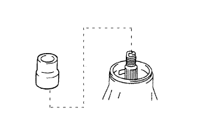

REAR DIFFERENTIAL CARRIER ASSEMBLY > REASSEMBLY |
| 1. ASSEMBLE DIFFERENTIAL CASE |
 |
Install the rear differential side gear thrust washer to the rear differential side gear.
Install the rear differential pinion thrust washer and rear differential pinion to the rear differential spider.
Fix the differential case RH in place.
Install the rear differential side gear and rear differential spider to the differential case RH.
Using a dial indicator, measure the differential case RH side backlash while pushing the pinion toward the case.
Remove the rear differential spider from the differential case RH.
Install the rear differential side gear and rear differential spider to the differential case LH.
 |
Using a dial indicator, measure the differential case LH side backlash while pushing the pinion toward the case.
| Thickness | Thickness |
| 0.87 to 0.93 mm (0.0343 to 0.0366 in.) | 1.17 to 1.23 mm (0.0461 to 0.0484 in.) |
| 0.97 to 1.03 mm (0.0382 to 0.0405 in.) | 1.27 to 1.33 mm (0.0500 to 0.0523 in.) |
| 1.07 to 1.13 mm (0.0421 to 0.0444 in.) | - |
 |
Align the matchmarks and assemble the differential case from the RH and LH cases.
| *1 | Matchmark |
Using a plastic-faced hammer, install the differential case.
Install the 8 bolts.
| 2. INSTALL DIFFERENTIAL RING GEAR |
Clean the contact surfaces of the differential case and ring gear.
Heat the ring gear in water that is approximately 100°C (212°F).
Carefully remove the ring gear from the boiling water.
After the moisture on the ring gear has completely evaporated, quickly install the ring gear to the differential case.
 |
Align the matchmarks on the ring gear with that of the differential case.
| *1 | Matchmark |
After the ring gear cools down sufficiently, apply adhesive to the 12 bolts and install them.
| 3. INSTALL REAR DIFFERENTIAL CASE BEARING |
Using SST and a press, press the bearing onto the differential case.
| 4. INSPECT DIFFERENTIAL RING GEAR RUNOUT |
Install the differential case to the carrier and install the 2 adjusting nuts so that there is no play in the bearing.
Install the 2 bearing caps with the 4 bolts.
 |
Using a dial indicator, measure the runout of the ring gear.
Remove the 2 bearing caps, 2 adjusting nuts and differential case.
| 5. INSTALL REAR DRIVE PINION FRONT TAPERED ROLLER BEARING |
Using SST and a press, press in the roller bearing (outer) to the carrier.
| 6. INSTALL REAR DRIVE PINION REAR TAPERED ROLLER BEARING |
Install the plate washer to the carrier.
Using SST and a press, press the roller bearing (outer) into the carrier.
| 7. INSTALL REAR DRIVE PINION REAR TAPERED ROLLER BEARING |
Using SST and a press, press the roller bearing (inner) onto the drive pinion.
| 8. ADJUST DIFFERENTIAL DRIVE PINION PRELOAD |
Install the drive pinion, rear drive pinion tapered roller bearing and rear differential drive pinion oil slinger.
 |
Using SST, install the companion flange.
| *a | Turn |
| *b | Hold |
Using a 30 mm socket wrench, adjust the drive pinion preload by tightening the companion flange nut.
Using SST to hold the companion flange in place, tighten the nut.
 |
Using a torque wrench, measure the preload.
| Item | Specified Condition |
| New bearing | 0.83 to 2.18 N*m (9 to 22 kgf*cm, 8 to 19 in.*lbf) |
| Used bearing | 0.88 to 1.98 N*m (9 to 20 kgf*cm, 8 to 17 in.*lbf) |
| 9. INSTALL DIFFERENTIAL CASE ASSEMBLY |
 |
Place the 2 bearing outer races on their respective bearings.
| 10. ADJUST RING GEAR BACKLASH |
 |
Install the plate washer on the side without the ring gear teeth.
Using a dial indicator, while holding the companion flange, measure the ring gear backlash.
|
Select a plate washer for the side with the ring gear teeth using the backlash as a reference.
Select a plate washer for the side with the ring gear teeth so that there is no clearance between the outer race and case.
 |
Using a plastic-faced hammer, install the plate washer for the side without the ring gear teeth.
Using a dial indicator, while holding the companion flange, measure the ring gear backlash.
| 11. ADJUST SIDE BEARING PRELOAD |
 |
Remove the ring gear teeth side plate washer and, using a micrometer, measure the thickness.
Using the backlash as a reference, select a new washer that is 0.05 to 0.20 mm (0.00197 to 0.00787 in.) thicker than the removed washer and, using a plastic-faced hammer, tap it in so that it fits against the bearing.
Recheck the ring gear backlash.
| Mark | Thickness | Mark | Thickness |
| 70 | 2.05 to 2.07 mm (0.0808 to 0.0814 in.) | 62 | 2.41 to 2.43 mm (0.0948 to 0.0956 in.) |
| 71 | 2.07 to 2.09 mm (0.0814 to 0.0822 in.) | 63 | 2.43 to 2.45 mm (0.0956 to 0.0964 in.) |
| 72 | 2.09 to 2.11 mm (0.0822 to 0.0830 in.) | 64 | 2.45 to 2.47 mm (0.0964 to 0.0972 in.) |
| 73 | 2.11 to 2.13 mm (0.0830 to 0.0838 in.) | 65 | 2.47 to 2.49 mm (0.0972 to 0.0980 in.) |
| 74 | 2.13 to 2.15 mm (0.0838 to 0.0846 in.) | 66 | 2.49 to 2.51 mm (0.0980 to 0.0988 in.) |
| 75 | 2.15 to 2.17 mm (0.0846 to 0.0854 in.) | 67 | 2.51 to 2.53 mm (0.0988 to 0.0996 in.) |
| 76 | 2.17 to 2.19 mm (0.0854 to 0.0862 in.) | 68 | 2.53 to 2.55 mm (0.0996 to 0.1000 in.) |
| 77 | 2.19 to 2.21 mm (0.0862 to 0.0870 in.) | 69 | 2.55 to 2.57 mm (0.1000 to 0.1011 in.) |
| 78 | 2.21 to 2.23 mm (0.0870 to 0.0877 in.) | 01 | 2.57 to 2.59 mm (0.1011 to 0.1019 in.) |
| 79 | 2.23 to 2.25 mm (0.0877 to 0.0885 in.) | 32 | 2.59 to 2.61 mm (0.1019 to 0.1027 in.) |
| 80 | 2.25 to 2.27 mm (0.0885 to 0.0894 in.) | 33 | 2.61 to 2.63 mm (0.1027 to 0.1035 in.) |
| 81 | 2.27 to 2.29 mm (0.0894 to 0.0901 in.) | 03 | 2.63 to 2.65 mm (0.1035 to 0.1043 in.) |
| 82 | 2.29 to 2.31 mm (0.0901 to 0.0909 in.) | 34 | 2.65 to 2.67 mm (0.1043 to 0.1051 in.) |
| 83 | 2.31 to 2.33 mm (0.0909 to 0.0917 in.) | 35 | 2.67 to 2.69 mm (0.1051 to 0.1059 in.) |
| 84 | 2.33 to 2.35 mm (0.0917 to 0.0925 in.) | 05 | 2.69 to 2.71 mm (0.1059 to 0.1066 in.) |
| 85 | 2.35 to 2.37 mm (0.0925 to 0.0933 in.) | 36 | 2.71 to 2.73 mm (0.1066 to 0.1074 in.) |
| 86 | 2.37 to 2.39 mm (0.0933 to 0.0940 in.) | 37 | 2.73 to 2.75 mm (0.1074 to 0.1082 in.) |
| 87 | 2.39 to 2.41 mm (0.0940 to 0.0948 in.) | 07 | 2.75 to 2.77 mm (0.1082 to 0.1090 in.) |
| 12. INSTALL BEARING CAP |
 |
Align the matchmarks on the cap and carrier.
| *1 | Matchmark |
Install the 2 bearing caps with the 4 bolts.
| 13. INSPECT DIFFERENTIAL RING GEAR RUNOUT |
|
Using a dial indicator, measure the runout of the ring gear.
| 14. INSPECT TOTAL PRELOAD |
|
Using a torque wrench, measure the preload with the teeth of the drive pinion and ring gear in contact.
| 15. INSPECT TOOTH CONTACT BETWEEN RING GEAR AND DRIVE PINION |
Coat 3 or 4 teeth at 3 different positions on the ring gear with Prussian blue.
Hold the companion flange firmly in place and rotate the ring gear in both directions.
Inspect the tooth contact pattern.

 |
| *1 | Plate Washer |
| *2 | Rear Drive Pinion Rear Tapered Roller Bearing (Outer) |
| Thickness | Thickness |
| 1.845 to 1.855 mm (0.0726 to 0.0730 in.) | 2.085 to 2.095 mm (0.0821 to 0.0824 in.) |
| 1.855 to 1.865 mm (0.0730 to 0.0734 in.) | 2.095 to 2.105 mm (0.0824 to 0.0828 in.) |
| 1.865 to 1.875 mm (0.0734 to 0.0738 in.) | 2.105 to 2.115 mm (0.0828 to 0.0832 in.) |
| 1.875 to 1.885 mm (0.0738 to 0.0742 in.) | 2.115 to 2.125 mm (0.0832 to 0.0836 in.) |
| 1.885 to 1.895 mm (0.0742 to 0.0746 in.) | 2.125 to 2.135 mm (0.0836 to 0.0840 in.) |
| 1.895 to 1.905 mm (0.0746 to 0.0749 in.) | 2.135 to 2.145 mm (0.0840 to 0.0844 in.) |
| 1.905 to 1.915 mm (0.0749 to 0.0753 in.) | 2.145 to 2.155 mm (0.0844 to 0.0848 in.) |
| 1.915 to 1.925 mm (0.0753 to 0.0757 in.) | 2.155 to 2.165 mm (0.0848 to 0.0852 in.) |
| 1.925 to 1.935 mm (0.0757 to 0.0761 in.) | 2.165 to 2.175 mm (0.0852 to 0.0856 in.) |
| 1.935 to 1.945 mm (0.0761 to 0.0765 in.) | 2.175 to 2.185 mm (0.0856 to 0.0860 in.) |
| 1.945 to 1.955 mm (0.0765 to 0.0769 in.) | 2.185 to 2.195 mm (0.0860 to 0.0864 in.) |
| 1.955 to 1.965 mm (0.0769 to 0.0773 in.) | 2.195 to 2.205 mm (0.0864 to 0.0868 in.) |
| 1.965 to 1.975 mm (0.0773 to 0.0777 in.) | 2.205 to 2.215 mm (0.0868 to 0.0872 in.) |
| 1.975 to 1.985 mm (0.0777 to 0.0781 in.) | 2.215 to 2.225 mm (0.0872 to 0.0875 in.) |
| 1.985 to 1.995 mm (0.0781 to 0.0785 in.) | 2.225 to 2.235 mm (0.0875 to 0.0879 in.) |
| 1.995 to 2.005 mm (0.0785 to 0.0789 in.) | 2.235 to 2.245 mm (0.0879 to 0.0883 in.) |
| 2.005 to 2.015 mm (0.0789 to 0.0793 in.) | 2.245 to 2.255 mm (0.0883 to 0.0887 in.) |
| 2.015 to 2.025 mm (0.0793 to 0.0797 in.) | 2.255 to 2.265 mm (0.0887 to 0.0891 in.) |
| 2.025 to 2.035 mm (0.0797 to 0.0801 in.) | 2.265 to 2.275 mm (0.0891 to 0.0895 in.) |
| 2.035 to 2.045 mm (0.0801 to 0.0805 in.) | 2.275 to 2.285 mm (0.0895 to 0.0899 in.) |
| 2.045 to 2.055 mm (0.0805 to 0.0809 in.) | 2.285 to 2.295 mm (0.0899 to 0.0903 in.) |
| 2.055 to 2.065 mm (0.0809 to 0.0812 in.) | 2.295 to 2.305 mm (0.0903 to 0.0907 in.) |
| 2.065 to 2.075 mm (0.0812 to 0.0816 in.) | 2.305 to 2.315 mm (0.0907 to 0.0911 in.) |
| 2.075 to 2.085 mm (0.0816 to 0.0820 in.) | - |
| 16. REMOVE REAR DRIVE PINION NUT |
Using SST to hold the companion flange in place, remove the nut.
| 17. REMOVE REAR DRIVE PINION COMPANION FLANGE SUB-ASSEMBLY |
Using SST, remove the rear drive pinion companion flange sub-assembly.
| 18. REMOVE REAR DIFFERENTIAL DRIVE PINION OIL SLINGER |
| 19. REMOVE REAR DRIVE PINION FRONT TAPERED ROLLER BEARING (INNER) |
Using SST and a hammer, tap in the rear drive pinion front roller bearing (outer).
Install the rear drive pinion front roller bearing (inner).
| 20. REMOVE REAR DRIVE PINION FRONT TAPERED ROLLER BEARING (OUTER) |
| 21. INSTALL REAR DIFFERENTIAL DRIVE PINION BEARING SPACER |
|  |
Install a new bearing spacer to the drive pinion.
| 22. INSTALL DIFFERENTIAL OIL STORAGE RING |
Using SST, tap in a new oil storage ring.
| 23. INSTALL REAR DRIVE PINION FRONT TAPERED ROLLER BEARING (OUTER) |
| 24. INSTALL REAR DRIVE PINION FRONT TAPERED ROLLER BEARING (INNER) |
| 25. INSTALL REAR DIFFERENTIAL DRIVE PINION OIL SLINGER |
| 26. INSTALL REAR DIFFERENTIAL CARRIER OIL SEAL |
Apply MP grease to the lip of a new oil seal.
Using SST and a hammer, tap in the oil seal.
| *a | Oil Seal Depth |
| 27. INSTALL REAR DRIVE PINION COMPANION FLANGE SUB-ASSEMBLY |
|
Using SST, install the companion flange to the drive pinion.
| *a | Turn |
| *b | Hold |
Coat the threads of a new nut with hypoid gear oil LSD.
Using SST to hold the flange, tighten the nut.
| 28. INSPECT DRIVE PINION PRELOAD |
 |
Using a torque wrench, measure the preload of the backlash between the drive pinion and ring gear.
| Item | Specified Condition |
| New bearing | 0.83 to 2.18 N*m (9 to 22 kgf*cm, 8 to 19 in.*lbf) |
| Used bearing | 0.88 to 1.98 N*m (9 to 20 kgf*cm, 8 to 17 in.*lbf) |
| 29. INSPECT TOTAL PRELOAD |
|
Using a torque wrench, measure the preload with the teeth of the drive pinion and ring gear in contact.
| 30. INSPECT DIFFERENTIAL RING GEAR BACKLASH |
Using a dial indicator, measure the backlash of the ring gear.
| 31. INSPECT RUNOUT OF REAR DRIVE PINION COMPANION FLANGE SUB-ASSEMBLY |
 |
Using a dial indicator, measure the runout of the drive pinion companion flange vertically and laterally.
| Item | Specified Condition |
| Vertical runout | 0.14 mm (0.00551 in.) |
| Lateral runout | 0.14 mm (0.00551 in.) |
| *a | Vertical Runout |
| *b | Lateral Runout |
| 32. STAKE DRIVE PINION NUT |
Using a chisel and hammer, stake the nut.